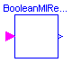
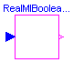
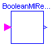
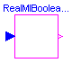

ModelicaAdditions.Blocks.Logical.Interfaces.BooleanSI2SO

partial block BooleanSI2SO
"2 Single Input / 1 Single Output Boolean control block"
extends Modelica.Blocks.Interfaces.BooleanBlockIcon;
Modelica.Blocks.Interfaces.BooleanInPort inPort1(final n=1)
"Connector of Boolean input signal 1";
Modelica.Blocks.Interfaces.BooleanInPort inPort2(final n=1)
"Connector of Boolean input signal 2";
Modelica.Blocks.Interfaces.BooleanOutPort outPort(final n=1)
"Connector of Boolean output signal";
protected
Boolean u1=inPort1.signal[1] "Input signal 1";
Boolean u2=inPort2.signal[1] "Input signal 2";
Boolean y=outPort.signal[1] "Output signal";
end BooleanSI2SO;

Block has a Boolean input and a continuous output signal vector where the signal sizes of the input and output vector are identical.
| Name | Default | Description |
|---|---|---|
| n | 1 | Number of inputs (= number of outputs) |
partial block BooleanMIRealMOs
"Multiple Boolean Input Multiple Real Output continuous control block with same number of inputs and outputs"
extends Modelica.Blocks.Interfaces.BlockIcon;
parameter Integer n=1 "Number of inputs (= number of outputs)";
Modelica.Blocks.Interfaces.BooleanInPort inPort(final n=n)
"Connector of Boolean input signals";
Modelica.Blocks.Interfaces.OutPort outPort(final n=n)
"Connector of Real output signals";
output Real y[n] "Output signals";
protected
Boolean u[n]=inPort.signal "Boolean input signals";
equation
y = outPort.signal;
end BooleanMIRealMOs;
ModelicaAdditions.Blocks.Logical.Interfaces.Comparison

| Name | Default | Description |
|---|---|---|
| threshold | 0 | Comparison with respect to threshold |
partial block Comparison "Base class for compare operations"
extends Modelica.Blocks.Interfaces.BooleanBlockIcon;
parameter Real threshold=0 "Comparison with respect to threshold";
Modelica.Blocks.Interfaces.InPort inPort(final n=1)
"Connector of Real input signal";
Modelica.Blocks.Interfaces.BooleanOutPort outPort(final n=1)
"Connector of Boolean output signal";
protected
Real u=inPort.signal[1] "Input signal";
Boolean y=outPort.signal[1] "Output signal";
end Comparison;

Block has a continuous input and a Boolean output signal vector where the signal sizes of the input and output vector are identical.
| Name | Default | Description |
|---|---|---|
| n | 1 | Number of inputs (= number of outputs) |
partial block RealMIBooleanMOs
"Multiple Real Input Multiple Boolean Output continuous control block with same number of inputs and outputs"
extends Modelica.Blocks.Interfaces.BooleanBlockIcon;
parameter Integer n=1 "Number of inputs (= number of outputs)";
Modelica.Blocks.Interfaces.InPort inPort(final n=n)
"Connector of Real input signals";
Modelica.Blocks.Interfaces.BooleanOutPort outPort(final n=n)
"Connector of Boolean output signals";
output Boolean y[n] "Boolean output signals";
protected
Real u[n]=inPort.signal "Input signals";
equation
y = outPort.signal;
end RealMIBooleanMOs;
ModelicaAdditions.Blocks.Logical.Interfaces.Comparision

| Name | Default | Description |
|---|---|---|
| threshold | 0 | Comparison with respect to threshold |
partial block Comparision
"For compatibility reasons only (as identifier is wrong)"
extends Modelica.Blocks.Interfaces.BooleanBlockIcon;
parameter Real threshold=0 "Comparison with respect to threshold";
Modelica.Blocks.Interfaces.InPort inPort(final n=1)
"Connector of Real input signal";
Modelica.Blocks.Interfaces.BooleanOutPort outPort(final n=1)
"Connector of Boolean output signal";
protected
Real u=inPort.signal[1] "Input signal";
Boolean y=outPort.signal[1] "Output signal";
end Comparision;